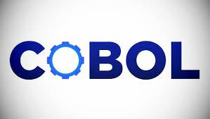
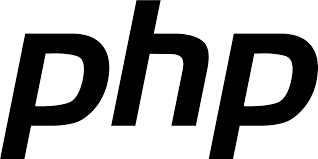

Ontwikkeling ProgrammeerTalen(Van 0 tot nu)

ProgrammeerTalen
1957 FORTRAN Maker:John Backus
FORTRAN is de oudste programmeertaal en wordt nog steeds gebruikt.
FORTRAN is gericht op het uitvoeren van berekeningen met snelheid en nauwkeurigheid.
1959 Cobol Maker:Grace Hopper
Cobol is een programmeertaal uit de jaren 60 die voornamelijk gebruikt wordt in zakelijke omgevingen.
Cobol is makkelijker te gebruiken en op meerdere computers inzetbaar.

1964 Basic Makers:John kemeny en Thomas Kurtz
Basic is een eenvoudige programmeertaal die oorspronkelijk was bedoeld om mensen snel te leren progammeren.
1969 C Makers: Dennis Ritchie en Bell Labs
De programmeertaal C is oorspronkelijk gebaseerd op de programmeertaal B. Die zelf op BCPL was gebaseerd, het is een zeer praktische programmeertaal die meer op Algol lijkt dan op andere voorlopers en wordt vaak gebruikt in besturingssysteem zoals Windows en Linux.

1983 C++ Maker: Bjarne Stroustrup
Stroustrup vond dat Simula bepaalde eigenschappen had die erg behulpzaam waren voor grootschallige software-ontwikkelingsprojecten, maar dat de taal te langzaam voor praktisch gebruik was.

1991 Phyton Maker: Guido van Rossum
De taal is mede gebaseerdop inzichten van professor Lambert Meertens die op een BASIC gebaseerd taal genaamd ABC had ontworpen, maar dan met allerlei zeer geavanceerde datastructuren. Inmiddels wordt de taal doorontwikkeld door een enthousiaste groep.

1995 PHP Maker:Rasmus Lerdorf
Aanvankelijk stonden de letters PHP voor Personal Home Page, Sinds PHP3.0 is de betekenis een recursief acroniem geworden PHP: Hypertext Preprocessor.

1995 Java Maker: James Gosling
Java ontstond begin jaren 90 in een klein dochterbedrijf van Sun Microsystem onder leiding van James Gosling. Dat bedrijfje First Person had als opdracht:"Make someting cool" In de beginjaren richtte het bedrijfje zich op software voor settepbox.

1995 JavaScript Maker: Brendan Eich
Toen JavaScript werd ontwikkeld was Netscape de webbrowser die door bijna iedereen werd gebruikt. Het was nog niet mogelijk om in een webpagina code op te nemen die door de browser wordt uitgevoerd. Dat zogenoemde client-side scripting biedt enorm veel extra mogelijkheden, dus er was veel behoefte aan.